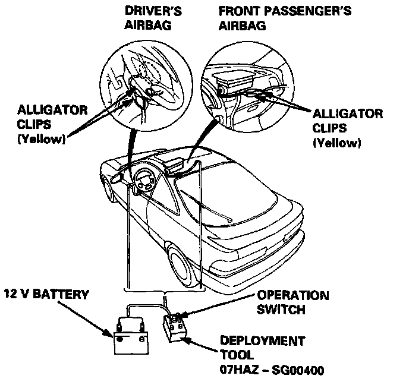

Airbag Deployment and Disposal (Inside Vehicle)



Airbag Assembly Disposal
Before scrapping any airbag(s) (including one in a whole car to be scrapped), the airbag must be deployed. If the car is still within the warranty period, before you deploy the airbag, the Acura District Service Manager must give approval and/or special instructions. Only after the air- bag has been deployed (as the result of vehicle collision, for example),it can be scrapped.
If the airbag(s) appear(s) intact (not deployed) treat it (them) with extreme caution.
Follow this procedure:
Deploying the Airbag(s): In-car
NOTE: If an SRS car is to be entirely scrapped, its airbag(s) should be deployed while still in the car. The airbag(s) should not be considered as salvageable pant(s) and should never be installed in another car.
WARNING: CONFIRM THAT EACH AIRBAG ASSEMBLY IS SECURELY MOUNTED; OTHERWISE, SEVERE PERSONAL INJURY COULD RESULT FROM DEPLOYMENT.
1. Disconnect the battery negative cable, then disconnect the positive cable.
2. Confirm that the special tool is functioning properly by following the check procedure on the label of the tool set box.
Driver's Airbag:
3. Remove the access panel, then disconnect the 3-P connector between the driver's airbag and the cable reel.
Front Passenger's Airbag:
4. Remove the glove box damper, then remove the glove box, then disconnect the 3-P connector between the front passenger's airbag and SRS main harness.
5. Cut off the airbag connector, strip the ends of the airbag wires, and connect the special tool alligator clips to the airbag. Place the special tool about thirty feet (10 meters) away from the airbag.


Airbag Assembly Disposal (cont'd)
6. Connect a 12 volt battery to the tool:
- If the green light on the tool comes on, the airbag igniter circuit is defective and cannot deploy the airbag. Go to Damaged Airbag Special Procedure.
- If the red light on the tool comes on, the airbag is ready to be deployed.
7. Push the tool's deployment switch. The airbag should deploy (deployment is both highly audible and visible - a loud noise and rapid inflation of the bag, followed by slow deflation).
- If audible/visible deployment happens and the green light on the tool comes on, continue with this procedure.
- If the airbag doesn't deploy, yet the green light comes ON, its igniter is defective. Go to Damaged Airbag Special Procedure.
WARNING: DURING DEPLOYMENT, THE AIRBAG ASSEMBLY CAN BECOME HOT ENOUGH TO BURN YOU. WAIT THIRTY MINUTES AFTER DEPLOYMENT BEFORE TOUCHING THE ASSEMBLY.
8. Dispose of the complete airbag assembly. No part of it can be reused. Place it in a sturdy plastic bag and seal it securely.
CAUTION:
- Wear a face shield and gloves when handling a deployed airbag.
- Wash your hands and rinse them well with water after handling a deployed airbag.